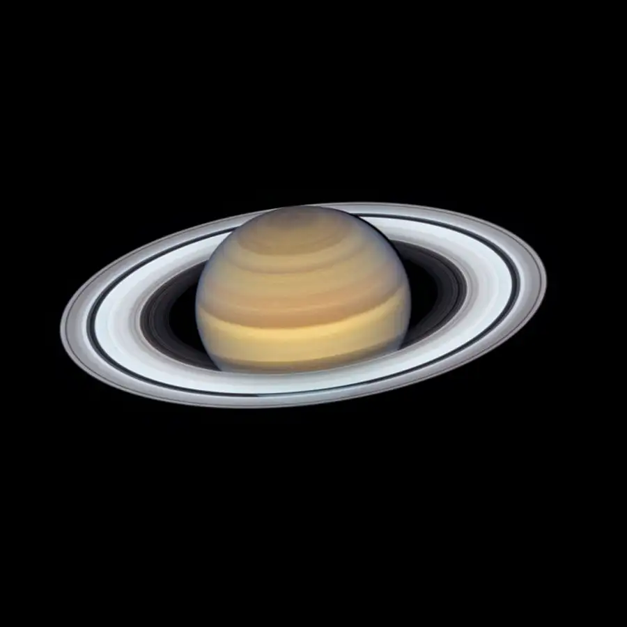

Saturn je šestá planeta od Slunce a druhá největší planeta Sluneční soustavy. Patří mezi plynné obry a je známý svými výraznými prstenci.
Saturn nemá pevný povrch. Je tvořen převážně vodíkem a heliem. Pod vrstvami mraků se nachází kapalný vodík a pravděpodobně malé kamenné jádro.
Atmosféra Saturnu obsahuje silné větry a bouře. Na severním pólu planety se nachází zvláštní šestiúhelníková bouře.
Saturnovy prstence jsou tvořeny ledem, kamením a prachem. Jsou největší a nejjasnější ze všech planet ve Sluneční soustavě.

Saturn má více než 140 známých měsíců. Největší z nich je Titan, který má hustou atmosféru a je větší než planeta Merkur.
Saturn je nejméně hustá planeta Sluneční soustavy. Jeho hustota je tak nízká, že by teoreticky mohl plavat na vodě.